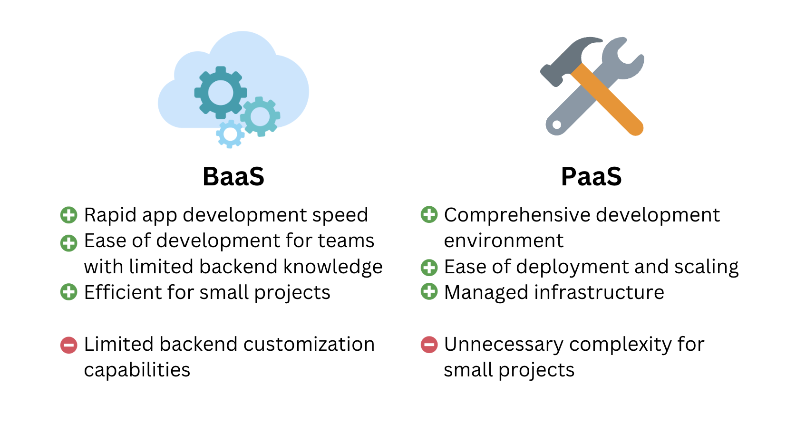

BaaS
What is Backend-as-a-Service?
Backend-as-a-Service (BaaS) is a cloud service model that allows developers to outsource the development of the backend (the application layer and data layers) to an external service, allowing teams to focus on front-end development and application features. A BaaS typically provides pre-written software for the following tasks:
-
Data storage and maintenance
-
APIs for performing CRUD (create, read, update, and delete) operations on the data
-
Security and authentication
-
Hosting
Distinguising BaaS and PaaS
Before continuing, it’s worth highlighting where BaaS sits among different cloud service models. Another other popular model is platform-as-a-service (PaaS). With PaaS, a developer relies on a cloud provider for infrastructure, development tools, and operating systems. The PaaS provider hosts all the hardware and software on its own infrastructure and provides the user with the services as an integrated platform solution. This model simplifies the development process by abstracting away infrastructure management, making it easier to build, deploy, and manage applications. With this model, developers still write their application code but do not need to worry about infrastructure management. BaaS sits at a higher level of abstraction than PaaS by providing complete pre-built backend infrastructure and offering ready-to-use backend services via APIs.

Software engineering projects that require comprehensive control, customization, and flexibility in their backend architecture may prefer a PaaS over a BaaS. PaaS is better suited for projects that involve building complex applications with specific or unique backend requirements. Developers working on these projects may require a wider range of development tools, runtime environments, databases, and middleware to tailor the application stack to their exact needs. PaaS provides the flexibility and control necessary for a much wider range of situations than BaaS allows. On the other hand, engineers who want to prioritize rapid development and simplicity may prefer a BaaS over a PaaS. BaaS is well-suited for projects where the primary focus is on building frontend applications with minimal backend development effort. We designed Snowclone with this latter group in mind, allowing our users to build and iterate quickly on minimum viable products (MVPs), prototype ideas, and reduce time-to-market when projects have fairly boilerplate backend requirements.